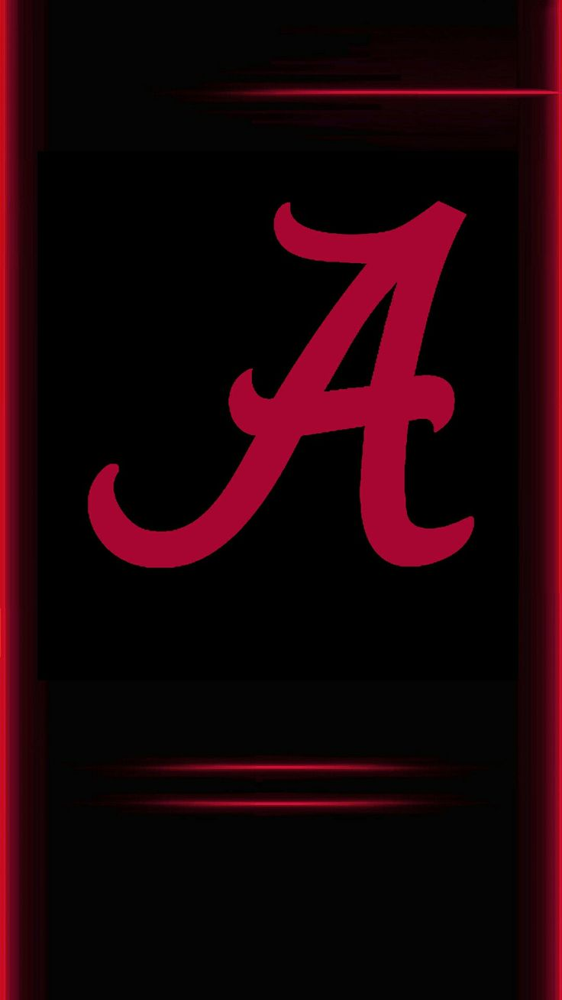

Alabama Crimson Tide
Home
(current)
Schedule

Bama's Saban: Season about players, not money
Alabama coach Nick Saban on Monday pushed back against the idea that money is the primary motivating factor in attempting to put on a college football season during the COVID-19 pandemic.
Alabama streak, favored 67 games in a row, set to continue
The AP's Preseason Top 25
Clemson opens at No. 1 in CBS Sports 76 rankings
SEC football schedule, news, latest updates
Alabama: What Was Learned in First Fall Camp Scrimmage